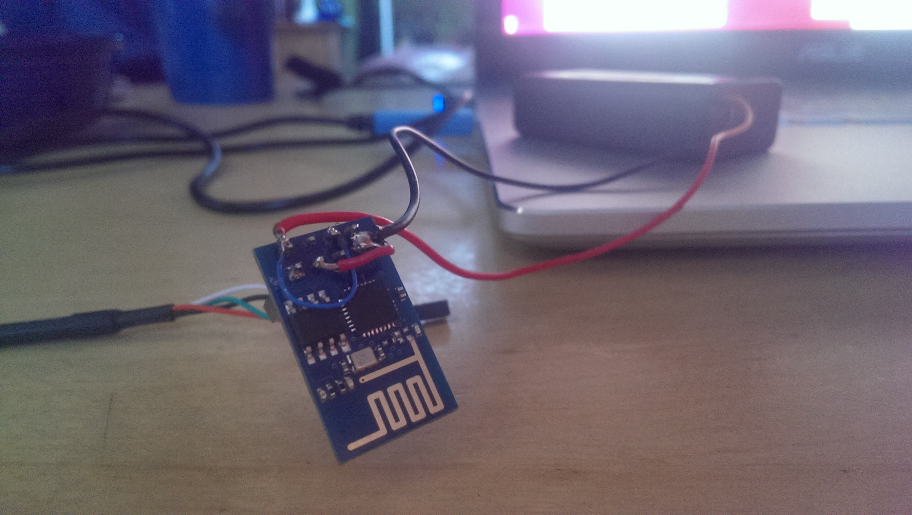

Building NodeMCU for the ESP8266
Thu 14 May 2015
This is a simple step-by-step guide to building and flashing NodeMCU for the ESP8266.
Build ESP8266 SDK
sudo apt-get install make unrar autoconf automake libtool gcc g++ gperf flex bison texinfo gawk ncurses-dev libexpat-dev python sed
cd /opt
git clone https://github.com/pfalcon/esp-open-sdk.git
cd esp-open-sdk
git submodule sync
git submodule update
make
export PATH=/opt/esp-open-sdk/xtensa-lx106-elf/bin:$PATH
Build NodeMCU
git clone https://github.com/nodemcu/nodemcu-firmware.git
cd nodemcu-firmware
# Switch to dev branch, since it's the most up to date
git checkout --track origin/dev
# Make INTEGER version, since it uses less memory/space
make EXTRA_CCFLAGS="-DLUA_NUMBER_INTEGRAL"
Flash NodeMCU
COMPORT=/dev/ttyUSB0 make flash
Modifying NodeMCU to fit you needs
app/include/user_modules.h
Contains a list of which modules to include in the build.
...
#define LUA_USE_MODULES_NODE
#define LUA_USE_MODULES_FILE
#define LUA_USE_MODULES_GPIO
#define LUA_USE_MODULES_WIFI
#define LUA_USE_MODULES_NET
...
app/include/user_config.h
Contains NodeMCU developer options, but could be of use.
...
#define DEVELOP_VERSION
#define NODE_ERROR
...